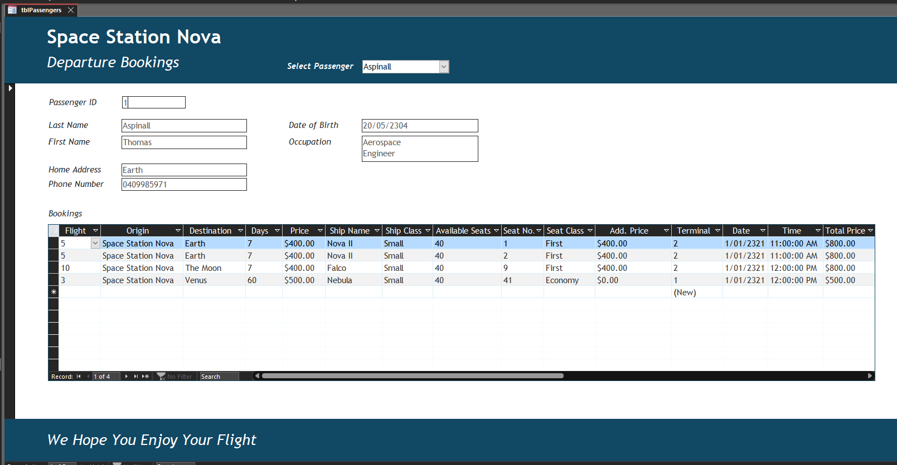
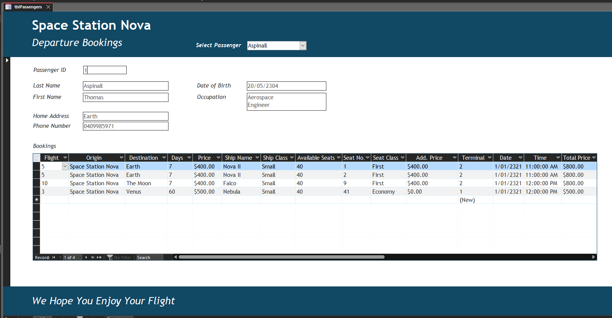

|
|
|
|
Audio |
|
Databases |
Dreamweaver is a web development program developed by Macromedia in 1997 and aquired by Adobe in 2005. The software allows for the creation and manipulation of HTML and CSS files and most notably features a live preview of the website as the code is edited.
This website was developed using Adobe Dreamweaver and was chosen over other web development softwares such as Visual Studio Code because of its simpler and more accessible user interface as well as the live updating view. However, while Dreamweaver may have been suitable for this project it does lack complexity compared to other applications such as VS Code which is aimed at developers who are more experienced with web development and programming with HTML and CSS.


GitHub, Inc. is an online development platform that uses Git software in order to provide internet hosting and software development of millions of users across the globe.
For this website, a remote GitHub repository was created and connected to a local repository via Dreamweaver. This allowed for the remote repository to be updated directly via Dreamweaver through executing a save/commit command, which saves any changes made to the local repository, followed by the Git push command, which uploads the content in the local repository to the remote repository.
Here are some of my other recent web development projects made using Wix:

|

|

|
Raster (or Bitmap) graphics are a type of digital image that is composed of many tiny rectangular pixels arranged in a grid. They are advantageous over other graphic formats such as vectors as they are able to accurately display complex and detailed images, however they are limited in the fact that they lose their quality as they are scaled up and down.
Anti-aliasing is a technique for smoothing rough edges in digital raster images and is commonly used in applications such as digital photography, video games, and computer graphics. It works by averaging the colour of the pixels at a boundary which to the naked eye makes the edge appear more smooth.

Image compression is the process of reducing the data sizes of digital image files through the use of algorithms. This is beneficial as it lowers the costs for the storage and transmission of image files. There are two image compression types: lossless and lossy.
Lossless compression is typical of PNG and GIF file types and involves the reduction of file sizes without any loss of information. Lossless compression is most valued for applications where fine image details and high visual quality are necessary such as medical imaging, technical drawings or clip art.
Lossy compression is typical of JPEG file types and involves the reduction of file sizes through the approximation and discarding of data, meaning a slight loss of information as a result. Lossy compression is most valued for applications where the optimisation of file sizes is necessary such as online uploading, downloading or streaming.
Colour depth (or bit depth) refers to the number of bits used to represent the colour of a single pixel in a digital raster image. Most modern images tend to use bits per colour systems, in which predetermined colour components are assigned a certain number of bits which controls how much that colour is present in the pixel. The higher the number of bits, the more combinations and therefore colours are able to be displayed in the image. For example an image that has a colour depth of 1-bit can only display 2 different colours for each pixel as 1 bit has 21 combinations (0 or 1), however an image that has a colour depth of 24-bit can display 16,777,216 different colours as 24 bits have 224 combinations.
The most common colour model is the RGB (red, green, blue) model in which the colours red, green and blue are combined in different ways to create a wide arrangement of colours on the colour spectrum. For true colour, each component has a depth of 1 byte (8 bits) meaning their are 256 different levels of intensity for each colour. With 3 different colour components and 1 byte for each this means that the colour depth for images using true colour RGB is 24-bit.
 24-bit
24-bit
16.8 Mil Colours 98 KB |
8-bit
256 Colours 37 KB |
4-bit
16 Colours 13 KB |
2-bit
4 Colours 6 KB |
1-bit
2 Colours 4 KB |
Vector graphics are a type of digital image that utilise a sequence of mechanisms or mathematical equations to generate points, lines, polygons, and curves on a 2D plane which then form an image. These are advantageous compared to raster graphics as they don't lose their quality as they are scaled up or down however they are limited in the fact they only consist of lines and curves and cannot display more complex images.
Code:
<svg width="400" height="100" >
<rect width="400" height="100" style="fill:rgb(0,0,255);stroke-width:10;stroke:rgb(0,0,0)">
</svg>
Photoshop is an image editing software developed by Adobe that is able to manipulate and edit raster graphics. It is used for a multitude of purposes including photo editing, graphic design and digital art.

For these logos Photoshop was used to draw up the basic shapes, add and stylise text if necessary and add any effects such as drop shadows, colour or gradient overlays, glows and more.


For YouTube thumbnails it is important to attract the attention of any possible viewer as well as convey the theme and type of video. Most of the thumbnails I've made, including the ones above, typically consist of an element or character in the foreground and a background. The element the foreground is usually obtained from a screenshot or online image and is cut out using the pen tool. It is then copied onto a suitable background which is also typically a screenshot and several effects are added including a dropshadow, outline and/or glow.
Premiere Pro is a video editing software developed by Adobe that is able to cut and manipulate video footge. It is used for a multitude of purposes including clip, video and film editing.
Here I used Premiere Pro to cut, join and manipulate screen recorded footage of a game for a YouTube video. While editing I also used Premiere to mix audio (microphone recording, game sounds, background music), add background music, add custom colour coded subtitles and include some effects.
Here I used Premiere Pro to produce a multimodal video presentation for an English Assessment task. This involved cutting sections from the text's movie adaptation and placing them into the video, adding effects, adding my voice over, editing in stock footage and adding in background music.
After Effects is a special effects and video editing software developed by Adobe that is able to add and manipulate VFX in video clips. It is used for a multitude of purposes including movie VFX and graphic design.
Here I used After Effects to produce an audio visualiser/video for a friend's music track that he produced. This involved creating a custom visualiser design as well as fine tuning the sensitivity to best represent the track. I also designed the layout for the video including the background, track name, artist name and artist icon. I also used After Effect's built in particle plugin to add some rising particles in the background that speed up and slow down depending on the tempo of the track.
Here I used After Effects to produce a custom intro for a fictional game distributing company. This involved designing a custom transparent logo in Photoshop and animating a "wipe" reveal effect using the different elements (controller body, eyes, mouth, wire). I also had to manually keyframe the "bounce" effect seen in the eyes and mouth. I also designed the background in Photoshop using images from multiple games and added a the scroll effect.
Here I used After Effects to design a custom moving wallpaper. This involved adding a moving "fog/dust" effect in the background as well as adding in a small amount of drifting particles.
Audacity is a free, open source digital audio editing and recording software that is used for a multitude of purposes including audio editing, cleaning and mixing
The following two clips are an example how audio can edited and mixed in Audacity. The first clip is the unedited raw recording from my microphone. In the second clip I applied a noise reduction in order to minimise the background noise and I also normalised the audio in order to produce a clearer clip

GarageBand is a free MacOS, iPadOS and iOS based audio editing and music producing software. It is used for many purposes including music production, audio mixing and podcast creation
The following tracks were produced using GarageBand for several short films I was involved in and make us of a range of orchestral and electronic instruments as well as sound effects. Automation (Mixing) was also used to change the tone, volume and equilisation of each individual sound track throughout the songs.
Click the play buttons to listen.
Google Sheets is a free online spreadsheet program that is a part of the web-based Google Docs Editors suite. It allows for the creation and manipulation of spreadsheet documents online and offers many features including the use of functions, cell stylisation and data validation.


Access is a database management system (DBSM) software developed by Microsoft that allows for the construction and management of relational databases. It allows for the creation of tables, queries, forms and reports and features a graphical user interface that allows for the structuring of relationships and entities in a schema diagram.

 


End

{kind=link}